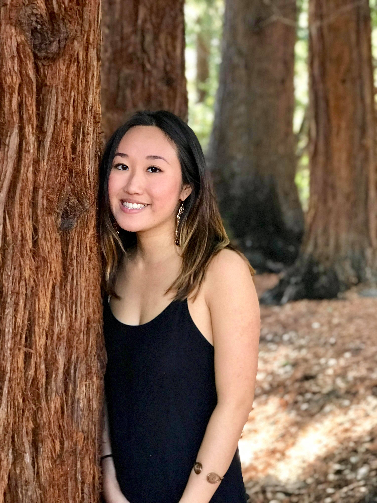

Members


News
Mar 09, 2018
Fall 2016 Audition Results
Check out our new recruits in the members section!
Feb 23, 2018
Weekly Sproul Performance
Come see and hear us perform a selection of songs from our current repertoire every week by beautiful Sather Gate on the UC Berkeley campus. Songs rotate from week to week, so don't miss out!
Jan 1, 2018
Fall 2018 Auditions!
Come to our auditions on Sproul!
-

- We are a student group acting independently of the University of California. We take full responsibility for our organization and this web site.